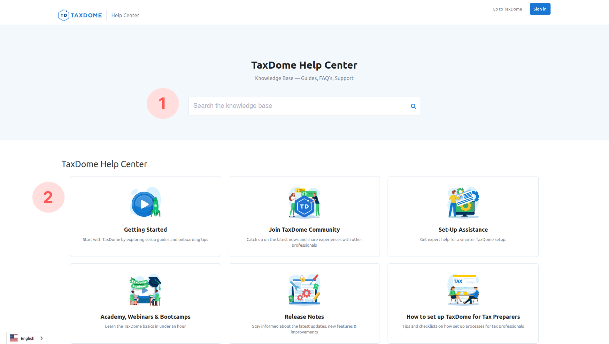
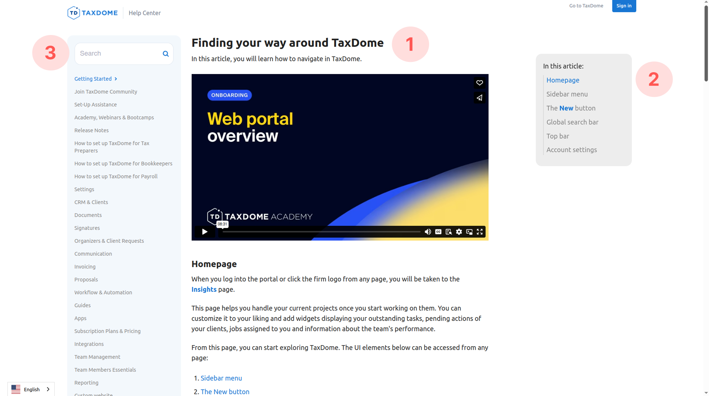
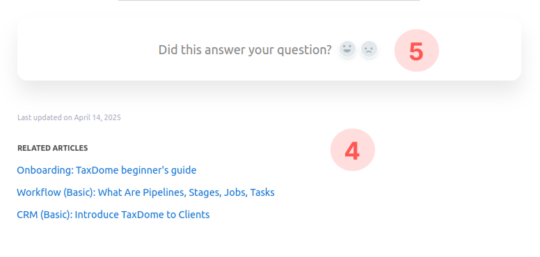

Getting started with TaxDome Help Center
In
the Help Center, you can find detailed articles that explain how to navigate the system, explore its
features, and quickly find answers to any questions you may have.
How to find the article you need
On the Help Center’s homepage, you can search for information in two ways:
1. With a search bar
If you already know what you are looking for, type a few keywords into the search field. Then choose from the
list the article you need.
2. Within folders
If you are not sure how to phrase your search or just want to explore the platform, choose a folder that
interests you. Then open it and select an article from the list inside.

How to navigate an article page
- The article text (1) is in the center. It often includes images, videos, and links to
other helpful materials to give a comprehensive understanding of the topic.
- A list of article subheadings (2) is on the right side. You can click on one of them to
jump straight to the topic instead of reading the entire material.
- A list of folders and the search bar (3) are on the left. Use them to move to other
articles.

- Links to related materials (4) sometimes appear at the bottom of the page, suggesting
additional helpful resources.
- Feedback panel (5) is also at the bottom, it lets you rate the article.

Where to begin
To make your first interactions with TaxDome easier, you can start by reading the following articles:
-
TaxDome beginner's guide
— a quick overview of basic features and first steps for new users.
-
TaxDome learning resources
— a list of resources to help you find more information about the platform.
-
TaxDome Dictionary
— a glossary of important terms to help you understand the language used throughout the platform,
especially useful for improving your searches.
-
Join TaxDome community
— an article about our internal resource, where you can connect with other users, support and
development teams, and get access to exclusive articles.